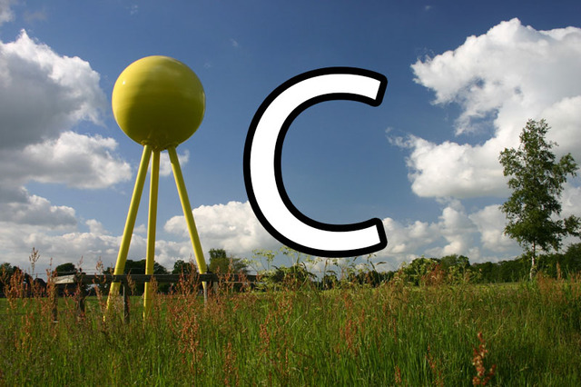

<fieldset data-role="controlgroup">
    <legend id="plpAbiC01">Wo kann man die „Milchstraße“ sehen ?</legend>
    <label for="plpAbiC01a">
        <input name="plpAbiC01" id="plpAbiC01a" value="falsch" type="radio">
        Im Supermarkt
    </label>
    <label for="plpAbiC01b">
        <input name="plpAbiC01" id="plpAbiC01b" value="richtig" type="radio">
        Nachts am Himmel
    </label>
    <label for="plpAbiC01c"><input name="plpAbiC01" id="plpAbiC01c" value="falsch" type="radio">
        Gar nicht
    </label>
</fieldset>
<fieldset data-role="controlgroup">
    <legend id="plpAbiC02">Wie heißt unsere „Milchstraße“ auf Griechisch ?</legend>
    <label for="plpAbiC02a">
        <input name="plpAbiC02" id="plpAbiC02a" value="falsch" type="radio">
        Milky Way
    </label>
    <label for="plpAbiC02b">
        <input name="plpAbiC02" id="plpAbiC02b" value="richtig" type="radio">
        Galaxie
    </label>
    <label for="plpAbiC02c">
        <input name="plpAbiC02" id="plpAbiC02c" value="falsch" type="radio">
        Kosmos
    </label>
</fieldset>
<fieldset data-role="controlgroup">
    <legend id="plpAbiC03">Kann es eine Sonnenfinsternis nur bei Neumond, nur bei Vollmond oder nur bei Halbmond geben ?</legend>
    <label for="plpAbiC03a">
        <input name="plpAbiC03" id="plpAbiC03a" value="richtig" type="radio">
        Neumond
    </label>
    <label for="plpAbiC03b">
        <input name="plpAbiC03" id="plpAbiC03b" value="falsch" type="radio">
        Vollmond
    </label>
    <label for="plpAbiC03c"><input name="plpAbiC03" id="plpAbiC03c" value="falsch" type="radio">
        Halbmond
    </label>
</fieldset>
<fieldset data-role="controlgroup">
    <legend id="plpAbiC04">Wie nennt man es, wenn der Erdschatten auf den Mond fällt ?</legend>
    <label for="plpAbiC04a">
        <input name="plpAbiC04" id="plpAbiC04a" value="falsch" type="radio">
        Neumond
    </label>
    <label for="plpAbiC04b">
        <input name="plpAbiC04" id="plpAbiC04b" value="richtig" type="radio">
        Mondfinsternis
    </label>
    <label for="plpAbiC04c"><input name="plpAbiC04" id="plpAbiC04c" value="falsch" type="radio">
        Mondgesicht
    </label>
</fieldset>
<fieldset data-role="controlgroup">
    <legend id="plpAbiC05">Sieht man von der Erde aus immer nur eine Seite des Mondes ?</legend>
    <label for="plpAbiC05a">
        <input name="plpAbiC05" id="plpAbiC05a" value="richtig" type="radio">
        Ja
    </label>
    <label for="plpAbiC05b">
        <input name="plpAbiC05" id="plpAbiC05b" value="falsch" type="radio">
        Nein
    </label>
</fieldset>
<fieldset data-role="controlgroup">
    <legend id="plpAbiC06">Ist es richtig, dass ein Tag und eine Nacht vergehen müssen, bevor sich die Erde einmal um sich selbst gedreht hat ?</legend>
    <label for="plpAbiC06a">
        <input name="plpAbiC06" id="plpAbiC06a" value="richtig" type="radio">
        Ja
    </label>
    <label for="plpAbiC06b">
        <input name="plpAbiC06" id="plpAbiC06b" value="falsch" type="radio">
        1/2 Tag
    </label>
    <label for="plpAbiC06c"><input name="plpAbiC06" id="plpAbiC06c" value="falsch" type="radio">
        Nein
    </label>
</fieldset>
<fieldset data-role="controlgroup">
    <legend id="plpAbiC07">Wovon sind Ebbe und Flut im Meer abhängig ?</legend>
    <label for="plpAbiC07a">
        <input name="plpAbiC07" id="plpAbiC07a" value="falsch" type="radio">
        Wind
    </label>
    <label for="plpAbiC07b">
        <input name="plpAbiC07" id="plpAbiC07b" value="richtig" type="radio">
        Anziehungskraft des Mondes
    </label>
    <label for="plpAbiC07c">
        <input name="plpAbiC07" id="plpAbiC07c" value="falsch" type="radio">
        Sonnennähe der Erde
    </label>
</fieldset>
<fieldset data-role="controlgroup">
    <legend id="plpAbiC08">Wie lange braucht die Sonne, um die Erde einmal zu umkreisen ?</legend>
    <label for="plpAbiC08a">
        <input name="plpAbiC08" id="plpAbiC08a" value="falsch" type="radio">
        1 Jahr
    </label>
    <label for="plpAbiC08b">
        <input name="plpAbiC08" id="plpAbiC08b" value="richtig" type="radio">
        Die Sonne umkreist die Erde nicht
    </label>
    <label for="plpAbiC08c">
        <input name="plpAbiC08" id="plpAbiC08c" value="falsch" type="radio">
        1 Tag
    </label>
</fieldset>
<fieldset data-role="controlgroup">
    <legend id="plpAbiC09">Welchen Ausdruck haben wir für das seltene Ereignis, wenn der Mond genau auf einer Achse zwischen Erde und Sonne steht ?</legend>
    <label for="plpAbiC09a">
        <input name="plpAbiC09" id="plpAbiC09a" value="falsch" type="radio">
        Mondfinsternis
    </label>
    <label for="plpAbiC09b">
        <input name="plpAbiC09" id="plpAbiC09b" value="richtig" type="radio">
        Sonnenfinsternis
    </label>
    <label for="plpAbiC09c">
        <input name="plpAbiC09" id="plpAbiC09c" value="falsch" type="radio">
        Sonnenwind
    </label>
</fieldset>
<fieldset data-role="controlgroup">
    <legend id="plpAbiC10">Welcher Himmelskörper nehmen - von der Erde aus gesehen – immer ab und zu ?</legend>
    <label for="plpAbiC10a">
        <input name="plpAbiC10" id="plpAbiC10a" value="richtig" type="radio">
        Venus
    </label>
    <label for="plpAbiC10b">
        <input name="plpAbiC10" id="plpAbiC10b" value="falsch" type="radio">
        Polarstern
    </label>
    <label for="plpAbiC10c">
        <input name="plpAbiC10" id="plpAbiC10c" value="falsch" type="radio">
        Mars
    </label>
</fieldset>
<fieldset data-role="controlgroup">
    <legend id="plpAbiC11">Nimmt der Mond nach Vollmond ab oder zu ?</legend>
    <label for="plpAbiC11a">
        <input name="plpAbiC11" id="plpAbiC11a" value="richtig" type="radio">
        Abnahme
    </label>
    <label for="plpAbiC11b">
        <input name="plpAbiC11" id="plpAbiC11b" value="falsch" type="radio">
        Zunahme
    </label>
    <label for="plpAbiC11c">
        <input name="plpAbiC11" id="plpAbiC11c" value="falsch" type="radio">
        Er macht Diät
    </label>
</fieldset>
<fieldset data-role="controlgroup">
    <legend id="plpAbiC12">Ist eine Mondfinsternis das gleiche wie Neumond?</legend>
    <label for="plpAbiC12a">
        <input name="plpAbiC12" id="plpAbiC12a" value="falsch" type="radio">
        Ja
    </label>
    <label for="plpAbiC12b">
        <input name="plpAbiC12" id="plpAbiC12b" value="richtig" type="radio">
        Nein
    </label>
</fieldset>
<fieldset data-role="controlgroup">
    <legend id="plpAbiC13">Ist an einem wolkigen Tag das Wetter über den Wolken auch bedeckt ?</legend>
    <label for="plpAbiC13a">
        <input name="plpAbiC13" id="plpAbiC13a" value="falsch" type="radio">
        Bedeckt
    </label>
    <label for="plpAbiC13b">
        <input name="plpAbiC13" id="plpAbiC13b" value="richtig" type="radio">
        Sonnenschein
    </label>
    <label for="plpAbiC13c">
        <input name="plpAbiC13" id="plpAbiC13c" value="falsch" type="radio">
        Regenwetter
    </label>
</fieldset>
<fieldset data-role="controlgroup">
    <legend id="plpAbiC14">Bei welchem seltenen Ereignis können wir tagsüber die Sterne sehen?</legend>
    <label for="plpAbiC14a">
        <input name="plpAbiC14" id="plpAbiC14a" value="richtig" type="radio">
        Mondfinsternis
    </label>
    <label for="plpAbiC14b">
        <input name="plpAbiC14" id="plpAbiC14b" value="falsch" type="radio">
        Sonnenfinsternis
    </label>
    <label for="plpAbiC14c">
        <input name="plpAbiC14" id="plpAbiC14c" value="falsch" type="radio">
        Polarlicht
    </label>
</fieldset>
<fieldset data-role="controlgroup">
    <legend id="plpAbiC15">Wie heißt die "Trennlinie" zwischen Himmel und Erde ?</legend>
    <label for="plpAbiC15a">
        <input name="plpAbiC15" id="plpAbiC15a" value="richtig" type="radio">
        Horizont
    </label>
    <label for="plpAbiC15b">
        <input name="plpAbiC15" id="plpAbiC15b" value="falsch" type="radio">
        Ekliptik
    </label>
    <label for="plpAbiC15c">
        <input name="plpAbiC15" id="plpAbiC15c" value="falsch" type="radio">
        Firmament
    </label>
</fieldset>
<fieldset data-role="controlgroup">
    <legend id="plpAbiC16">Wie nennt man eine Kugel, auf der verkleinert die Erde abgebildet ist ?</legend>
    <label for="plpAbiC16a">
        <input name="plpAbiC16" id="plpAbiC16a" value="falsch" type="radio">
        Tellurium
    </label>
    <label for="plpAbiC16b">
        <input name="plpAbiC16" id="plpAbiC16b" value="richtig" type="radio">
        Globus
    </label>
    <label for="plpAbiC16c">
        <input name="plpAbiC16" id="plpAbiC16c" value="falsch" type="radio">
        Planisphäre
    </label>
</fieldset>
<fieldset data-role="controlgroup">
    <legend id="plpAbiC17">Was sieht man am Himmel, wenn die Sonne auf eine Regenwand scheint ?</legend>
    <label for="plpAbiC17a">
        <input name="plpAbiC17" id="plpAbiC17a" value="falsch" type="radio">
        Polarlicht
    </label>
    <label for="plpAbiC17b">
        <input name="plpAbiC17" id="plpAbiC17b" value="falsch" type="radio">
        Gar nichts
    </label>
    <label for="plpAbiC17c">
        <input name="plpAbiC17" id="plpAbiC17c" value="richtig" type="radio">
        Regenbogen
    </label>
</fieldset>
<fieldset data-role="controlgroup">
    <legend id="plpAbiC18">Welcher Ausdruck ist richtig für das Weltall:</legend>
    <label for="plpAbiC18a">
        <input name="plpAbiC18" id="plpAbiC18a" value="falsch" type="radio">
        Konstellation
    </label>
    <label for="plpAbiC18b"><input name="plpAbiC18" id="plpAbiC18b" value="richtig" type="radio">
        Kosmos
    </label>
    <label for="plpAbiC18c">
        <input name="plpAbiC18" id="plpAbiC18c" value="falsch" type="radio">
        Kosmetik
    </label>
</fieldset>
<fieldset data-role="controlgroup">
    <legend id="plpAbiC19">Wo auf der Erde ist es ein halbes Jahr dunkel und ein halbes Jahr hell ?</legend>
    <label for="plpAbiC19a">
        <input name="plpAbiC19" id="plpAbiC19a" value="falsch" type="radio">
        Im Keller
    </label>
    <label for="plpAbiC19b">
        <input name="plpAbiC19" id="plpAbiC19b" value="richtig" type="radio">
        An den Polen
    </label>
    <label for="plpAbiC19c">
        <input name="plpAbiC19" id="plpAbiC19c" value="falsch" type="radio">
        Am Äquator
    </label>
</fieldset>
<fieldset data-role="controlgroup">
    <legend id="plpAbiC20">Warum fallen wir Menschen nicht von der Erde, obwohl sie sich dreht ?</legend>
    <label for="plpAbiC20a">
        <input name="plpAbiC20" id="plpAbiC20a" value="falsch" type="radio">
        Trägheit
    </label>
    <label for="plpAbiC20b">
        <input name="plpAbiC20" id="plpAbiC20b" value="falsch" type="radio">
        Fliehkraft
    </label>
    <label for="plpAbiC20c">
        <input name="plpAbiC20" id="plpAbiC20c" value="richtig" type="radio">
        Schwerkraft
    </label>
</fieldset>
<fieldset data-role="controlgroup">
    <legend id="plpAbiC21">Wie heißen die künstlichen Himmelkörper, die z. B. Fernsehsendungen übertragen?</legend>
    <label for="plpAbiC21a">
        <input name="plpAbiC21" id="plpAbiC21a" value="falsch" type="radio">
        Asteroiden
    </label>
    <label for="plpAbiC21b">
        <input name="plpAbiC21" id="plpAbiC21b" value="falsch" type="radio">
        Planetoiden
    </label>
    <label for="plpAbiC21c">
        <input name="plpAbiC21" id="plpAbiC21c" value="richtig" type="radio">
        Satteliten
    </label>
</fieldset>
<fieldset data-role="controlgroup">
    <legend id="plpAbiC22">Wie heißt ein Stern mit einem Schweif, der sich um die Sonne bewegt ?</legend>
    <label for="plpAbiC22a">
        <input name="plpAbiC22" id="plpAbiC22a" value="falsch" type="radio">
        Kismet
    </label>
    <label for="plpAbiC22b">
        <input name="plpAbiC22" id="plpAbiC22b" value="falsch" type="radio">
        Achmet
    </label>
    <label for="plpAbiC22c">
        <input name="plpAbiC22" id="plpAbiC22c" value="richtig" type="radio">
        Komet
    </label>
</fieldset>
<fieldset data-role="controlgroup">
    <legend id="plpAbiC23">Was kann man mit einem Kompass bestimmen ?</legend>
    <label for="plpAbiC23a">
        <input name="plpAbiC23" id="plpAbiC23a" value="falsch" type="radio">
        Promillegehalt
    </label>
    <label for="plpAbiC23b">
        <input name="plpAbiC23" id="plpAbiC23b" value="falsch" type="radio">
        Kompostwärme
    </label>
    <label for="plpAbiC23c">
        <input name="plpAbiC23" id="plpAbiC23c" value="richtig" type="radio">
        Himmelsrichtung
    </label>
</fieldset>
<fieldset data-role="controlgroup">
    <legend id="plpAbiC24">Was war am 21. Juli 1969 ein "großer Schritt für die Menschheit" ?</legend>
    <label for="plpAbiC24a">
        <input name="plpAbiC24" id="plpAbiC24a" value="falsch" type="radio">
        Deutschland Fußballweltmeister
    </label>
    <label for="plpAbiC24b">
        <input name="plpAbiC24" id="plpAbiC24b" value="falsch" type="radio">
        Erster Mensch auf der Erde
    </label>
    <label for="plpAbiC24c">
        <input name="plpAbiC24" id="plpAbiC24c" value="richtig" type="radio">
        Erster Mensch auf dem Mond
    </label>
</fieldset>
<fieldset data-role="controlgroup">
    <legend id="plpAbiC25">Welche Bilder kann man nur sehen, wenn es dunkel ist ?</legend>
    <label for="plpAbiC25a">
        <input name="plpAbiC25" id="plpAbiC25a" value="falsch" type="radio">
        TV-Bilder
    </label>
    <label for="plpAbiC25b">
        <input name="plpAbiC25" id="plpAbiC25b" value="falsch" type="radio">
        Video-Text
    </label>
    <label for="plpAbiC25c">
        <input name="plpAbiC25" id="plpAbiC25c" value="richtig" type="radio">
        Sternbilder
    </label>
</fieldset>
<fieldset data-role="controlgroup">
    <legend id="plpAbiC26">Wer hat die meisten Reisen um die Erde gemacht ?</legend>
    <label for="plpAbiC26a">
        <input name="plpAbiC26" id="plpAbiC26a" value="falsch" type="radio">
        TUI/Neckermann
    </label>
    <label for="plpAbiC26b">
        <input name="plpAbiC26" id="plpAbiC26b" value="falsch" type="radio">
        Columbus
    </label>
    <label for="plpAbiC26c">
        <input name="plpAbiC26" id="plpAbiC26c" value="richtig" type="radio">
        der Mond
    </label>
</fieldset>
<fieldset data-role="controlgroup">
    <legend id="plpAbiC27">Wo ist die Sonne, wenn man sie tagsüber nicht sieht ?</legend>
    <label for="plpAbiC27a">
        <input name="plpAbiC27" id="plpAbiC27a" value="falsch" type="radio">
        über den Bergen
    </label>
    <label for="plpAbiC27b">
        <input name="plpAbiC27" id="plpAbiC27b" value="falsch" type="radio">
        bei den 7 Zwergen
    </label>
    <label for="plpAbiC27c">
        <input name="plpAbiC27" id="plpAbiC27c" value="richtig" type="radio">
        hinter den Wolken
    </label>
</fieldset>
<fieldset data-role="controlgroup">
    <legend id="plpAbiC28">Wie heißen die Menschen, die mit einer Rakete in den Weltraum fliegen ?</legend>
    <label for="plpAbiC28a">
        <input name="plpAbiC28" id="plpAbiC28a" value="falsch" type="radio">
        Aquanauten
    </label>
    <label for="plpAbiC28b">
        <input name="plpAbiC28" id="plpAbiC28b" value="richtig" type="radio">
        Astronauten
    </label>
    <label for="plpAbiC28c">
        <input name="plpAbiC28" id="plpAbiC28c" value="falsch" type="radio">
        Galaxonauten
    </label>
</fieldset>
<fieldset data-role="controlgroup">
    <legend id="plpAbiC29">Ist eine Sternschnuppe ein verglühender Meteor, Überrest eines Satelliten oder ein Glühwürmchen ?</legend>
    <label for="plpAbiC29a">
        <input name="plpAbiC29" id="plpAbiC29a" value="richtig" type="radio">
        Komet
    </label>
    <label for="plpAbiC29b">
        <input name="plpAbiC29" id="plpAbiC29b" value="falsch" type="radio">
        Glühwürmchen
    </label>
    <label for="plpAbiC29c">
        <input name="plpAbiC29" id="plpAbiC29c" value="falsch" type="radio">
        Satelliten
    </label>
</fieldset>
<fieldset data-role="controlgroup">
    <legend id="plpAbiC30">Wo gibt es Ebbe und Flut ?</legend>
    <label for="plpAbiC30a">
        <input name="plpAbiC30" id="plpAbiC30a" value="falsch" type="radio">
        Nur in der Nordsee
    </label>
    <label for="plpAbiC30b">
        <input name="plpAbiC30" id="plpAbiC30b" value="falsch" type="radio">
        Nur in der Ostsee
    </label>
    <label for="plpAbiC30c">
        <input name="plpAbiC30" id="plpAbiC30c" value="richtig" type="radio">
        Auch in den Bergen
    </label>
</fieldset>
<fieldset data-role="controlgroup">
    <legend id="plpAbiC31">Roter Himmel über Hamburg um 02:00 Uhr – was kann das sein ?</legend>
    <label for="plpAbiC31a">
        <input name="plpAbiC31" id="plpAbiC31a" value="falsch" type="radio">
        Abendrot
    </label>
    <label for="plpAbiC31b">
        <input name="plpAbiC31" id="plpAbiC31b" value="richtig" type="radio">
        Polarlicht
    </label>
    <label for="plpAbiC31c">
        <input name="plpAbiC31" id="plpAbiC31c" value="falsch" type="radio">
        Wetterleuchten
    </label>
</fieldset>
<fieldset data-role="controlgroup">
    <legend id="plpAbiC32">An welchem Punkte der Erde ist jede Himmelsrichtung Süden ?</legend>
    <label for="plpAbiC32a">
        <input name="plpAbiC32" id="plpAbiC32a" value="falsch" type="radio">
        Äquator
    </label>
    <label for="plpAbiC32b">
        <input name="plpAbiC32" id="plpAbiC32b" value="falsch" type="radio">
        Südpol
    </label>
    <label for="plpAbiC32c">
        <input name="plpAbiC32" id="plpAbiC32c" value="richtig" type="radio">
        Nordpol
    </label>
</fieldset>
<fieldset data-role="controlgroup">
    <legend id="plpAbiC33">An welchen beiden Tagen geht die Sonne genau im Osten auf ?</legend>
    <label for="plpAbiC33a">
        <input name="plpAbiC33" id="plpAbiC33a" value="richtig" type="radio">
        Frühlingsanfang
    </label>
    <label for="plpAbiC33b">
        <input name="plpAbiC33" id="plpAbiC33b" value="falsch" type="radio">
        Sommeranfang
    </label>
    <label for="plpAbiC33c">
        <input name="plpAbiC33" id="plpAbiC33c" value="falsch" type="radio">
        Winteranfang
    </label>
</fieldset>
<fieldset data-role="controlgroup">
    <legend id="plpAbiC34">Wie nennt man eine besonders hohe Flut, wenn Erde, Mond und Sonne in einer Linie stehen ?</legend>
    <label for="plpAbiC34a">
        <input name="plpAbiC34" id="plpAbiC34a" value="falsch" type="radio">
        Monsun
    </label>
    <label for="plpAbiC34b">
        <input name="plpAbiC34" id="plpAbiC34b" value="richtig" type="radio">
        Springflut
    </label>
    <label for="plpAbiC34c">
        <input name="plpAbiC34" id="plpAbiC34c" value="falsch" type="radio">
        Sturmflut
    </label>
</fieldset>
<fieldset data-role="controlgroup">
    <legend id="plpAbiC35">Wovon hängt das Gewicht eines Eimers Wasser auf den verschiedenen Planeten ab ?</legend>
    <label for="plpAbiC35a">
        <input name="plpAbiC35" id="plpAbiC35a" value="richtig" type="radio">
        Masse des Planeten
    </label>
    <label for="plpAbiC35b">
        <input name="plpAbiC35" id="plpAbiC35b" value="falsch" type="radio">
        Temperatur des Wassers
    </label>
    <label for="plpAbiC35c">
        <input name="plpAbiC35" id="plpAbiC35c" value="falsch" type="radio">
        Atmosphäre des Planeten
    </label>
</fieldset>
<fieldset data-role="controlgroup">
    <legend id="plpAbiC36">Welcher der 9 Planeten zieht besonders gerne Kometen und andere Himmelskörper an ?</legend>
    <label for="plpAbiC36a">
        <input name="plpAbiC36" id="plpAbiC36a" value="falsch" type="radio">
        Ceres
    </label>
    <label for="plpAbiC36b">
        <input name="plpAbiC36" id="plpAbiC36b" value="falsch" type="radio">
        Erde
    </label>
    <label for="plpAbiC36c">
        <input name="plpAbiC36" id="plpAbiC36c" value="richtig" type="radio">
        Jupiter
    </label>
</fieldset>
<fieldset data-role="controlgroup">
    <legend id="plpAbiC37">Was ist „Das Beste am Norden“ ?</legend>
    <label for="plpAbiC37a">
        <input name="plpAbiC37" id="plpAbiC37a" value="falsch" type="radio">
        das Bier
    </label>
    <label for="plpAbiC37b">
        <input name="plpAbiC37" id="plpAbiC37b" value="falsch" type="radio">
        der NDR
    </label>
    <label for="plpAbiC37c">
        <input name="plpAbiC37" id="plpAbiC37c" value="richtig" type="radio">
        der Planeten-Lehrpfad
    </label>
</fieldset>
<p id="tphSchnitzeljagdPlanetenlehrpfadAbiturCErgebnis"></p>
<a onclick="tphSchnitzeljagdPlanetenlehrpfadAbiturC();" class="large button expand">Auswerten</a>